亚庇、仙本那一周游
{kind=link}
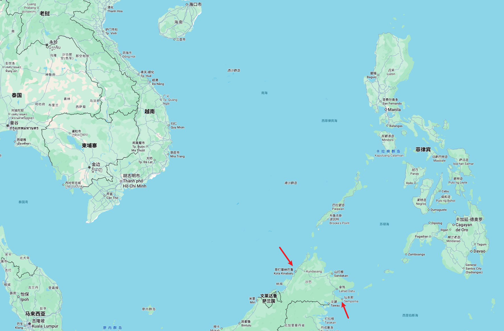
八月份和女朋友一起去了马来西亚的亚庇和仙本那玩了一周，记录一下流水账。
前面两天，我都在趁空的时候记录到笔记里，记录到很多那一天的感受。到后面就懒了，回头记录就会少去了很多当时的感觉，更多的是一种回顾。以后还是尽量当天把经历和感受都写下来。
day1 - 出发 - 亚庇
匆忙收拾了行李出发，下了点雨，还好出门时又小了。
到了机场，在值机柜台值机，称重发现超了一些，我们买的亚航只有每人 7 kg 的行李额，而我们的行李有 15.7 kg。为了避免登机称重检查，我们将一些比较重的电子产品拿在身上，这部分应该不会称重。不过实际登机的时候也没人检查，白担心了。
在机场的拉面店吃了碗面，女朋友点的酸菜牛肉面还不错，酸菜牛肉汤的味道够浓郁。我点了招牌牛肉面，红油版本，比酸菜牛肉贵点，胜在肉多一些。但是汤感觉很寡淡，像是清汤上滴了一些红油，和我印象中的牛肉面相去甚远。肉挺大一片，看起来像是叉烧的做法，肉红红的，偏甜口，不太喜欢。
一碗面，最重要的是汤底和面，汤底要足够浓郁，味道能挂在面上；面应该有嚼劲，不坨，更优者，能吃到面香，谷物的香味。我很喜欢吃日式拉面，原因就在于它的汤底，虽然有些油腻，但味道浓郁。
很久没有坐飞机了，多少有点紧张，脑子里总会想到一些飞机事故，担心会不会出事。飞机慢慢移动了跑道，停稳之后，突然快速地加速，没多久就飞起来了。有点颠簸，飞机的低鸣催人犯困。
戴上耳机，听着歌（河边的风、跟着感觉走），看《我本无意成仙》（旅途里看完了），高空上光线很好，kindle 的文字看起来很舒服，甚至有些刺眼。
快到了，飞机快速降落，左边的耳朵开始堵住了，然后痛了起来，不管怎样都恢复不了，持续了很久。
后来查了可以一下，可以通过捏住鼻子呼气，感觉空气压在耳膜那，使得两边的压力平衡，缓解症状。
到了机场后上了个洗手间，同一个班次的人都走了，我们自己看指示牌走，看到了星巴克却没看到它边上的离境指示牌，瞎走去到了转机的地方，工作人员指了个方向，上来了又再问了个路边的人才搞清楚怎么走，总算是出境了。出境需要拍照和按两个手指的指纹，其他倒是比较顺利。
出来之后先去 ATM 取了点钱，用的银联卡，虽然有 Visa，但是似乎信用卡有更高的一些手续费，利息可能比较高，还是选择了用储蓄卡取了 500 RM (Ringgit Malaysia)，差不多 850 RMB。看了一些小红书，说会吞卡，还好没发生。
使用储蓄卡，需要注意的是需要在对应的 APP 打开境外取款的选项。
{kind=link}
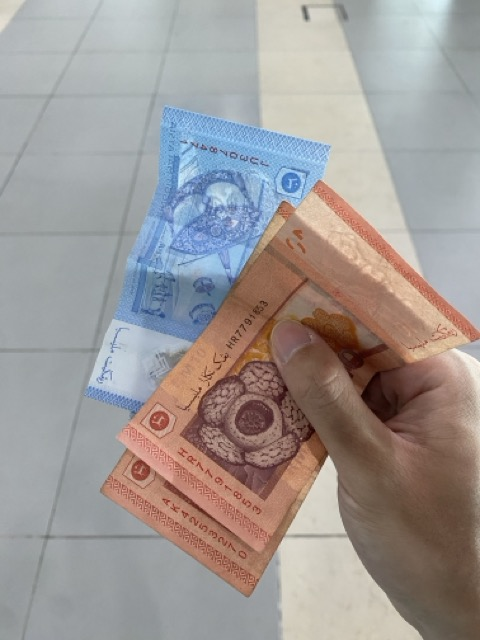
取钱后先买了水，航空上没有提供饮料，一路下来相当口渴。之后在 TuneTalk 办了张电话卡，只有流量，无法打电话，25MR，40G 的流量。
7 天的旅程，除了自己用，还给女朋友开热点，偶尔看看视频，完全够用。平时出海玩基本很少玩手机，流量使用比较多的场景就是导航。
解决了钱和网络的问题，剩下的一些支付大部分应该可以靠支付宝。
用 Grab 打车去酒店，在国内无法注册 Grab，换了电话卡后就可以了，17 RM 打车到了酒店，在 Grab 绑定了支付宝，但司机没用 Grab 结账，而是直接让扫码，不过价格是一样的。
后面成功绑定了支付宝，打车都是先扣费的。司机用让扫码，大概是当时没有绑定成功。
去到酒店办理入住，整体还算顺利，只是英语不熟悉，前台说 deposit 没听明白，直到他来了一句「押金一百」，懂了。等待期间还提供了两杯冰的芒果汁，挺好喝的。
稍作休息就去吃饭，在 Google Map 和 Grab 翻了翻附近的餐厅，最后是在 Google Map 上找了一家评分 4.9 的海鲜餐厅，KK Garden Seafood。
走过去不远，但亚庇晚上的灯是那种偏暗的橙色，路上有点黑，开着的店不多，人也不是很多，走在路上还是会有点担心，所幸顺利走到了。
餐厅非常大，露天的，像是农村里摆的酒席一样，非常多的大圆桌，圆桌中间还放了一个舞台，会有一些人演出。
点了炒帝皇叶，鲜虾，生蚝，米饭还有芒果汁。生蚝 10 RM 一个，折合人民币大约 17 一个，和国内吃的品种不太一样，肚子没那么肥，裙边更多，所以嚼劲更足，不过调料一般，差强人意。虾似乎只能按斤点，一斤的虾我们两个人愣是没吃完，剩下了几只。虾吃着挺新鲜，肉质紧实，做法应该就是炸了一些，撒上了很多细碎的干奶酪，味道吃起来像是咸蛋黄。最好吃的还是蒜炒帝皇菜，菜又香又脆，味道也很足。芒果汁相当一般，除了冰一无是处，不如酒店给的芒果汁。
{kind=link}
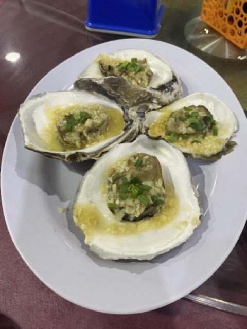
吃饭期间舞台也有一些表演，一些鼓点伴奏，几个穿着特色衣服的人在舞动，偶尔吼叫几声，也会邀请观众上去一起跳舞，或者游戏，其中一个拿着长长的吹针吹远处的气球还挺有趣的。吹中了就有欢呼，给参与的食客满满的情绪价值。
饭后找便利店补充一些缺少的物资，Google Map 一看，便利店不少，但大多快要关门了，也才八点多而已。
找了附近开着的 24 小时的 711，里面远不及深圳的 711，商品的种类不多。隔壁还有一个本地的超市，东西还更多点。但都没能买到雨伞，驱蚊水，买了些面包和罐装咖啡当早餐，换了那双顶脚的洞洞鞋。
出门要穿一双舒服的鞋子！
出门前临时买的洞洞鞋，一直顶脚，很难受。
新买的人字拖，人字是用粗糙的材料做的，后面去海边玩，人字带和脚摩擦，也把脚弄伤了，走起路来也是不舒服。
出门一定要穿一双舒服的鞋！
Google Map 导航去便利店，给的步行路线不对，马路过不去，好不容易找到一个人行道，需要按键红绿灯才会变，去的时候按键是好的，回来的那边按键是坏的，宽敞的马路车水马龙，回来横跨马路相当惊险。
后来问了问前台和当地人，都说过马路建议走天桥。但从地图上看，很远的路都没有天桥，亚庇这边对行人不太友好。有的地方想去到对面，横穿马路是最快的，只是车速实在太快，非常危险。
day2 - 浮潜
第二天的活动是浮潜，一大早起来吃了点面包和罐装咖啡，七点钟坐上了出发的小巴车去到了码头。
七八点钟，码头上已经不少人了，我们分到了六号船，一船大概有四十来个人，领队是一个叫 snake 小蛇的马来人，也会说中文，随船还有几个小黑，一个是船长，其他几个是浮潜教练兼船上的气氛活跃组。
船上要穿厚实的救生衣，非常闷热。船头有一个小的入口，尽管船速比较快，风能贯穿而过，但船内也没有感受到多少风，或许能带走一些热量，但还是有些热。
船开了，小黑们就开始放着动词打次的舞曲，舞动了起来，船上一些 E 人也跟着嗨，隔壁船的小黑也在朝着这边条，黝黑的皮肤，穿着黄色的比基尼，相当妖娆。船上的人也看得开心。虽然我也喜欢热闹，但本身比较拘谨，也无法参与进去，干脆闭眼休息。偶尔船长还会让船左右侧倾很多，给大家制造一些刺激感。侧倾后，往船尾看，海也倾斜了，仿佛变成了天空。
船开了一个多小时去到了环滩岛，在这里换一下浮潜的衣服，暂作休息。没有什么时间在把岛环绕一下，岛上有洗手间，淋浴，一些休息的亭子，还有便利店，都比较简陋。岛上的沙子是白色的，沙滩整体比较硬，只能踩出很浅的脚印。
换好衣服回到船上，snake 给大家发放浮潜的设备：浮潜泳镜，呼吸管，和用于呼吸管上的一次性咬嘴。然后讲解了如何使用它们。
浮潜泳镜容易起雾，snake 讲了如何解决，一种是啥忘了，只记得他喜欢的方法，吐口水（不是痰）到目镜里用手抹一下就好了，说完他就示范了一下……
呼吸管也可能进水，有三个办法，一个是用力吹出去，一次不行多试几次；一个是浮出水面倒掉，吐掉；而 snake 最喜欢的方法是直接喝了，不知道真假，不过进水不多倒也不是不行。我第一次浮潜，用的最多的还是第二种。
浮潜点有两个，一个主要看珊瑚，一个主要看鱼群。
{kind=link}
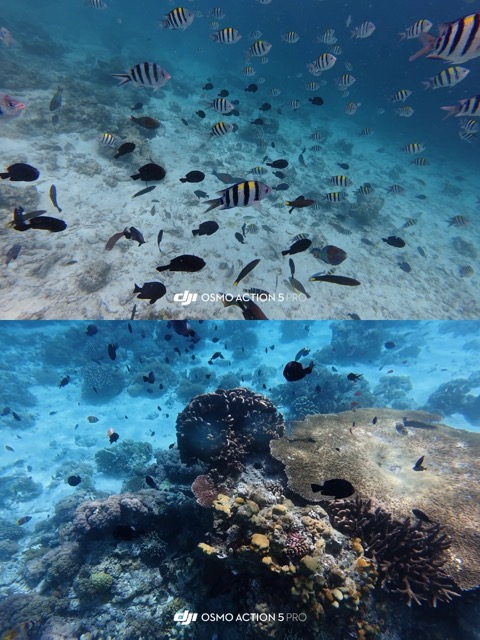
先去了看珊瑚，船停泊在浮潜点，会拉一根比较长的安全绳，上面会有一些救生圈，便于一些不会游泳的人可以拉着绳子安全一些。
尽管我不太会游泳，但因为有救生衣，所以倒也不害怕下水，女朋友虽然浮潜过，但本身比较怕水，倒是下去得很犹豫，比较害怕。
下水后凉快了许多，水也不冷。刚开始容易在浮力下仰翻过来，稍微划几下腿就能调整过来，把头埋进海里一看，哇，好漂亮，底下有很多珊瑚，长的有些像卷心菜，白色的，不知道是死了，还是本身就是这个颜色。也有一些鱼，但不是很多。
海水本身有推力，就算漂着不动，不一会儿就会漂远，远离了安全绳。因为我不太会游泳，所以还是会有些慌张，埋进去看一阵子，漂一阵子，就要抬起头看看离船有多远，远了就游回去一些。如果真的漂得远，我想应该需要不少力气才能游回来，我大概没有这样的实力。所幸出发前女朋友在泳池教了我一点蛙泳的技巧，海水浮力也很大，只要不远我还是能游回去的。
因为第一次浮潜，呼吸管还不太会用，游泳也会让呼吸急促，有时嘴里还是会进去一口海水，咸咸的，苦苦的，用力吹不出去，就得浮起来赶紧吐掉，不然呼吸不过来。
下一个浮潜点是看鱼，可以买一些鱼食（装在塑料瓶里的面包碎），用的时候灌满水，从瓶底开始挤出来面包，鱼就会过来吃，能吸引不少鱼，就像是在金鱼池子里喂金鱼一样。扎进海里看，感觉就像是扎进了一个布置精美的鱼缸，各种各样的小鱼，有的游得快，有的慢悠悠。
如果水性好，不怕漂远，我挺想就这么漂在海里，直到看厌。
总的来说，浮潜是很有趣的，海底清澈的话能看到很多东西，是一种新奇的体验。
之后回到海岛吃午餐，吃着很一般。饭后洗漱一下，和女朋友在沙滩散散步拍拍照也就回去了，又是一两个小时的路程。
我有高度近视，浮潜没法戴眼镜，得戴隐形眼镜。这是我第一次戴隐形眼镜，自己还不会戴，是女朋友帮忙的，废了九牛二虎之力才戴上。隐形眼镜一旦靠近眼睛就忍不住地眨眼，一旦接触眼球还会有异物感，就更抗拒，给女朋友添了不少麻烦，花了十分钟才戴上去。
女朋后买的隐形眼镜是她用过比较好的，我戴上去之后完全没有异物感，感觉就和戴上刚配的眼镜一样，很清晰，但又和熟悉的旧眼镜不同，清晰到会觉得有些晃。很久没试过不戴眼镜也能看清了，有时还会习惯性地推眼镜。
日抛的隐形建议不要佩戴超过八小时，回到酒店后就想先摘下来，摘了半天也摘不下来，女朋友也用手和镊子帮我试过，但我都很害怕弄伤眼睛，我们也看了一些小红书上的技巧，看别人操作很轻巧，用手指撑开上下眼皮，转动眼睛，眨眼就能脱落，或许是我操作不对，死活不行。
后来先去吃了饭，看到了丁香医生的 一篇操作文章，先洗干净手擦干，用左右手的手指掰开眼皮，用食指在隐形眼镜边缘滑动，滑到眼白，眼睛可能也要看向一边，让眼白部分更多，避免伤害到角膜，然后用食指和拇指指腹捏起来。
一直尝试了很多次，总算是取下来了，真担心取不下来损伤眼眼睛。
后面第二次用这个办法取下来就很快了。难点是要忍住眨眼，避免把眼镜复位；以及要用食指和拇指感受到眼镜然后捏起来。
喜欢隐形眼镜的方便，但不喜欢它的佩戴和摘除，也担心会损伤眼睛，如非必要以后大概不会随便戴，还是有框眼镜舒服。
回去后休息了一阵，赶在太阳沉入海底前来到了海边看日落，还挺好看，但不算惊艳，没能看到晚霞将海面染色的画面。和女朋友用富士的一次性胶片机拍了合照，也不知道洗出来会怎么样。
{kind=link}
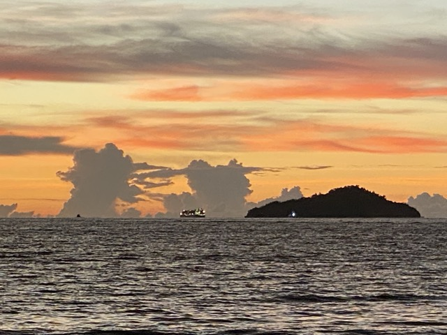
去海滩打车，Grab 上那会儿还没绑定支付宝，以为司机会向第一个司机一样备有付款码，结果到了要给钱才发现只收现金。尽管我们有，但司机找不开，也没有其他支付手段，他让我们试试找人兑散钱，女朋友去了，想着去酒店里买东西找零，但酒店消费只能刷卡。回来司机说算了，说把我们手上的零钱（7MR）给他就好了，但费用本身是 12 MR，我说不行，下车在在酒店门口碰到了几个马来人，用蹩脚英语说了一下情况，终于换了零钱，付了车费。还问了司机为什么不支持 Alipay，他说要每个月交 50 MR，觉得贵。司机也是挺友好的。也很感谢那几个帮忙的路人。
说起来，在 Grab 上打的车我觉得都很好，价格是否便宜另说，但车上都挺干净，没有异味，最多有点香薰的味道。司机也不会随便搭话，偶尔我搭话了，他们也都挺友好，可能见我是游客，下车前也会祝我 have a good day。
看完日落之后，去女朋友在小红书找的饭店吃饭，一家叫 Grill Fish 的餐厅，不少本地人在吃。菜单上有很多饮料，但不知道是什么，用蹩脚的英文问点餐的店员，她也很耐心友好的跟我解释，搜索图片告诉我是什么。来了几天，接触的人当地人不算多，但给我的感觉都是比较友好的。
点了两个菜和一个看起来是饼一样的东西，上菜后发现那个饼原来是一个很大的炸鸡蛋饼。这家店的菜量很大，和东北的菜量有的一比，两个人吃饱了还有一小半。味道 ok，价格也比较实惠。如果来到亚庇这附近推荐一试。
饭后去便利店买了点零食和饮料，我是挺喜欢喝水的，尤其是有味道的水，每到一个新地方，我都想看看有什么没见过的饮料和啤酒，买来试试也是不错的。
身体不好就没买啤酒了，品类也不多，就试了试没见过的罐装咖啡，但味道都差不多，都很甜，和国内的瓶装咖啡没啥区别。
打车回酒店，酒店还提供了健身房和游泳池，就去看了看。去健身房踩单车十公里，出了点汗，酒店的健身房还会准备很多擦汗的毛巾，擦完了就丢进回收桶里，好评。之后去看了看酒店泳池，是一个露天泳池，看起来很浅，飘了点小雨，上面空无一人。
day3 - 红树林 & 日落 & 萤火虫
第三天的行程是去红树林看猴子和萤火虫，行程在下午，上午可以睡个懒觉。
前天晚上突然想起都没在这边吃过早餐，想起以前看视频，一些人会专门去当地吃吃早餐。早餐的种类往往也很多，所以何不早起去看看亚庇当地有什么吃。小红书上找了找大家过来都会去哪里吃早餐，找到一家做烧麦的，一家做汤粉的，打算去试试。
早上闹钟响起，很困实在不想起来，但不起来后面估计也没啥机会去吃早餐了，还是挣扎了起来。虽然不远，但还是打车去了，横穿马路实在危险。
去到烧麦店，点了皮蛋烧麦，腐皮卷，烧麦和一种当地的饮料拉茶，打包带走，因为后面还有粉，现在吃了估计后面就吃不下了，带回去给女朋友当早餐。拉茶似乎是这边特有的饮料，也试了试，就是淡奶茶，和香飘飘奶茶差不多。又去汤粉店点了粉，叫牛肉叻沙，就是沙爹汤底的牛肉粉，汤底是比较浓郁的，是我喜欢的类型。还点了杯咖啡，这边咖啡有咖啡和咖啡 O，咖啡 O 是不加糖的，不然默认都是加糖，甜不辣鸡。
{kind=link}
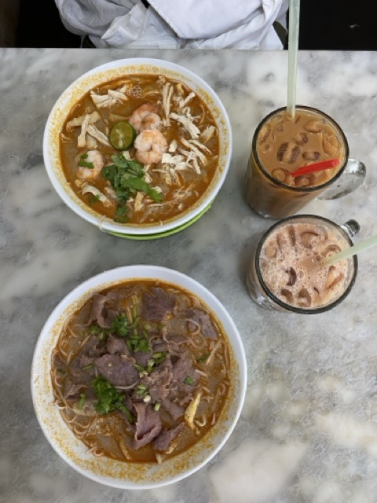
之后就回去歇了一阵，女朋友睡醒，带回来的早餐已经凉了，吃起来味道没那么好。午餐又去吃了牛肉叻沙，吃完就回去收拾了一下。
一点左右司机来了，是一个华裔，还比较健谈，开了一辆小车，除了我们两个，还要再接两个人，车程大概一个半小时。
去到红树林的码头，码头挺好看的，种了很多好看的植物，像是个小花园。
然后先吃了顿下午茶，他们准备了一些糕点，和饮料，有咖啡和玫瑰饮料，玫瑰饮料粉粉的，味道比较新奇，说不上很好喝。咖啡很热，苦苦的，没有加糖，就和麦当劳的黑咖啡差不多，倒也喜欢。
吃完下午茶，就坐船出发，船有两层的，放满了椅子，四周都是敞开的。
红树林分布在河的两岸，河蛮宽敞的，能容纳两艘观光船，河水很浑浊，泥黄色的，上面还飘着一些水草和垃圾。两岸有不少的树，长得很茂密，红树林的根很长，密密麻麻的根伸进河岸扎根。
下午主要行程就是看猴子，一种长鼻猴，船一路行驶，大家两边张望想找到猴子。偶尔能找到一两只， 找到猴子之后向导要求大家保持安静，不能惊呼，不然会吓跑猴子。期望中的看猴子是靠的很近，猴子多，能看的很清楚，但实际都距离很远，被很多枝叶挡住了，其实看不太清楚。不过我对看猴子的兴趣也不是很大，不是非要看到才行。坐在船上，两边都是红树林，吹着风也很舒服，就这么一路沿河行驶也很好。
没多久，就返航回去吃晚餐了，晚餐准备了几个菜自己拿盘子接，味道还行。
晚餐之后再次乘船去渔村（当地人的一个村落）看日落，村落沿着一边河岸分布，通过一些木柱子立在河岸边上，颜色也比较鲜艳，但因为沿河，看起来有些脏乱，给人一种这里的生活会有些困难的感觉。
日落还不错，天边还出现了一小截的彩虹，黄昏时分，穆斯林似乎有在日落之后祷告的习惯，远处传来清晰的祷告声，不知道是不是船上有穆斯林，此时船也停着，安安静静地，只有祷告的声音，和黄昏日落还挺搭的，给人一些宁静的感觉。（但有人用音箱打破了宁静，蛮讨厌的）
{kind=link}
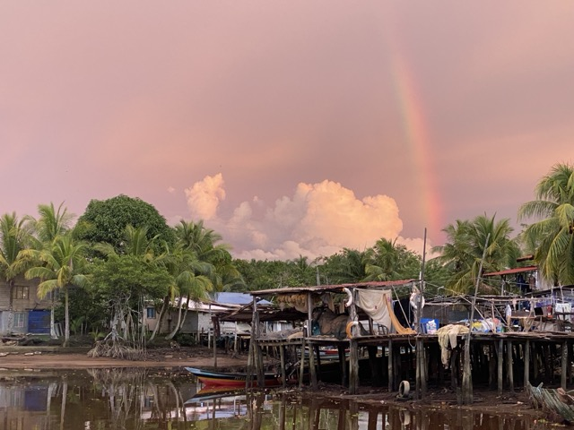
日落之后就去看萤火虫，此时天也暗了下来，船上有人拿着绿色的灯，模拟雌性萤火虫的发光，吸引雄性的萤火虫。
雄性成虫通常活跃于夜晚，进行长距离飞行和发光，而雌性则活动较少，多数情况下隐藏在植被中很少飞行或不能飞行。
萤火虫 by 维基百科
一路行驶，河岸有的树上能看到很多的萤火虫，像是一棵装点后的圣诞树，但萤火虫的光没有那么亮，是一种黄绿色的荧光，拿摄像机都无法拍到。
不同萤火虫的发亮频率不同，有的闪烁的很快，像是在抽风，有的则比较缓慢，有一种呼吸感。飞起来的萤火虫也是，有的突然闪现，有的则像是水母一样，隔一段时间往前挪动一点。有的萤火虫从树上飞落，又有点像是落叶的下坠。
萤火虫也不是四处都有，集中在某几个树丛上。萤火虫其实很小，可能就比大米稍微大一点点。虽然没有夸张到很亮，也是我看过最多的萤火虫了。
看完萤火虫折返回到码头，码头还准备了火花表演，一个人拿着一根绳子一样的火花在甩，转出一个火花圈，黑夜里看起来倒是挺灿烂，不过转了两圈也就结束了。
然后就坐车回去，司机一路上讲了挺多话，同行的人提起 巴瑶族，司机发表了很多个人看法。 他还推荐了一家炸鸡店，说是只有沙巴（亚庇属于沙巴州。）这里才能吃到，比肯德基好吃。开玩笑说离我们住的地方很远，到了指给我们看，其实就在酒店后面。好奇地点了一些，味道还行，鸡肉大多比较多汁，比较嫩，外面的皮相对没有那么厚，要说比肯德基好吃，那倒也算是，但也没有特别惊艳。
第二天要离开亚庇，九点多的飞机去仙本那，回到酒店把行李收拾好，就睡觉了。
day4 - 海钓 - 仙本那
一大早赶去机场做飞机，在机场的 Old Town 咖啡店吃了个早餐，在便利店里也能看到 Old Town 的罐装咖啡，大概是这边的一个连锁咖啡店。点了一杯咖啡，依然是很甜，在这边很少能喝到不加糖的拿铁。
飞到仙本那后，因为担心来不及去码头，包了车去到码头，下午一点多的行程，到了才十二点，时间绰绰有余。
码头是搭建在海边的一些木屋，想着先吃个午饭，但码头没什么吃的，最后吃了两个泡面。码头边上的海很多船只来回穿梭着。靠近码头的这片海域漂浮着不少塑料垃圾，不知道有没有人打捞。
一点多出海去海钓，船上回来了 3 个人，手上拎着一袋鱼，鱼都不怎么大，送他们去了另一个码头，估计是要去加工品尝，然后我们就出发去海钓了。
船开到一片离码头比较远的海域，但也不算很远，还能清楚的看到码头的位置。
饵料是一些切碎的鱿鱼。钓杆不算粗，看起来就不是用来钓大鱼的。钓竿的两个鱼钩，上下分布，最下面挂了一个椭圆形的石坠，钓竿的上有一个收束鱼线的装置，有一个开关，拨一下线就会松掉，然后在石坠的拉扯下不断延伸，转动一下摇杆，开关就会重新锁定，避免鱼线延伸更多。一开始我不知道转动摇杆就能锁定鱼线，而是手动把那个开关推回去，费劲，也容易被快速延伸的鱼线把手划痛。松了线之后，石坠会拉着线不断下沉，一段时间后能鱼线就不会继续延伸，大概就是石坠触底了。然后就是等待鱼上钩，鱼上钩之后能感觉到一种拉扯感，赶紧通过摇杆把线收回，运气好的话就能看到一只鱼挂在上面。
钓了一下午，我也才钓上来 3 条，有的鱼身上摸起来很粗糙，有的比较光滑，有的是棕色的，有的是粉色的。钓到鱼还是开心的，但遗憾大多时候都是空军。
同船的船长倒是总能钓上来，所以还是有技巧的。船长往往能将鱼线抛到比较远的地方，我不太清楚如何抛，很难抛远。我猜测可能和饵料的新鲜程度，以及鱼所在的高度有关，总是触底是不行的，鱼可能在不同的高度，需要尝试。
钓不到鱼，船长也会换钓点，换了三四次。
虽然钓不上来什么鱼，但是钓鱼本身也挺有趣的，不断尝试，等待，偶尔的收获。而且周围没什么船，挺安静的，海面时而会有一些波浪，让船晃荡起来，有时晃得甚至站不稳。阳光猛烈，四周相对平静，专心钓鱼，这种感觉也挺好。
同行 3 个人，女朋友钓上了一条，我钓上了 3 条，另一个男生好像也只钓上了一条，算下来我还算是幸运的。
女朋友就坐在那，戴个太阳帽和墨镜，倒也有一副钓鱼佬的模样。她期望的海钓是那种能钓大鱼的，像是一条够两个人吃的石斑鱼，但实际上都是一些小鱼。
一点多出发，大概四点多就回来了，没钓上来什么鱼，钓上来的鱼我们也没要。
打车回酒店，酒店是一个青年旅馆，叫月光客栈，不过我们订的是双人间，房间还起来了各种名字，我们那间叫汤臣一品。
感觉这边华人还是很多的，像是酒店，出海，大部分的游客都是华人。
可能是穆斯林的习惯，我们住的地方需要拖鞋才能进，所有的室内区域都是光脚的，包括厕所，会有点不习惯，觉得脏，不过入乡随俗，也就三四天，将就一下吧。
青旅边上的街，晚上还有夜市，看起来是七八点钟开始，持续到十一点左右，有很多小摊，五颜六色的果汁，煎饼，烧烤……，在夜市的中间还摆了一个舞台，有人跳舞、唱歌。有天晚上，听到一个人唱 What's Up，还挺好听，挺像原唱的。从青旅的窗户看过去，似乎还是个游客。
晚上吃饭，从 Google Map 上找了一下评分高，环境看起来还不错的餐厅，叫 Dozo，吃的大多是一些咖喱、沙爹、面包、奶茶一类的东西，没啥特色，但环境和味道都还可以。
住的酒店里，插头就在床头上面，下面留的空间不够，我们带的转接头插不进去，床也不好搬出来，除了床头，也没有别的插头了，实在是有些头疼。吃完饭在附近的便利店逛了逛，正好看到又一个比较小的转接头，买了回去一试，插进去后，相当于把插头突出来一些，就可以插我们带的转接头了，lucky。不过不知道是不是加了一个转接头的关系，还是说我们自己带的转接头的关系，感觉充电的效率并不高。所幸带的移动电源有 20000 毫安，平时出门也比较少玩手机，也是妥妥够用了，晚上休息好几个小时也足够时间把各种电器充好电。
住的这个青旅还是比较简陋的，没有准备饮用水，纸也是感觉放了很久的卷纸，只准备了两条浴巾，所幸我们自己带了一些一次性用品，一次性的四件套，纸巾也可以在外面的便利店里买，凑合能住。
day5 - day7 - 浮潜、海岛、水屋
后面的三天，基本的行程都差不多，早上 8:30 去到码头，到报团的地方报道，负责人会告诉你分配的船号，然后就等叫号，上船出海。出海后，一般就是去两三个海岛，在海岛上换衣服、洗漱、吃午饭、拍拍照，然后就去海岛附近的海域进行浮潜和深潜。
午饭吃的基本都是饭盒，像是学校食堂的餐盘，分成了好几个区域，一般是鸡肉，加上一些蛋和蔬菜，除了是冷的之外，整体我觉得味道还不错，是中餐的口味。
三天行程里，也坐够了快艇，一船有十几个人，每次出发回来都要快一个小时。有时海浪比较大，船拍在海上就像是撞击在硬地板一样，看似很柔软的水也会变得无比坚硬，比坐车还颠。
浮潜的体验和在亚庇的差不多，但我觉得仙本那这边的浮潜会更好看，沙滩、海岛、珊瑚、鱼群都是仙本那更好一些，如果只是想体验浮潜深潜的话，去仙本那会更合适。
{kind=link}
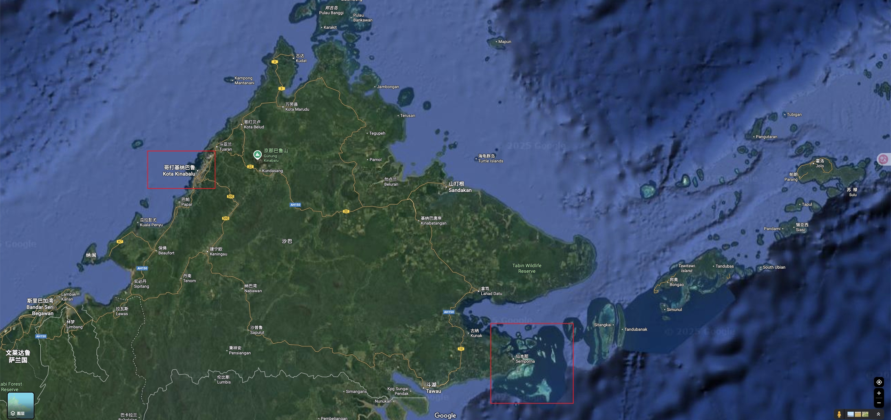
除了浮潜，还去了一个水屋，装修得挺好看的，各种颜色的三角梅，屋子地下的海也很清澈，有一些当地人划着小船在卖椰子、捞海鲜、卖海鲜。卖椰子的人看你像是华人，说的话也是普通话，「五块钱一个」、「五块钱两个」，可见这边的华人真的很多。有个海岛很漂亮，长长的沙滩，黄色偏白的沙子，海水浅蓝清澈，海岛边缘有一个比较浅的海滩，走过去能看到一些海星，一些小鱼，稍远一点的地方可能没有了滩，海水则是深蓝的。
{kind=link}
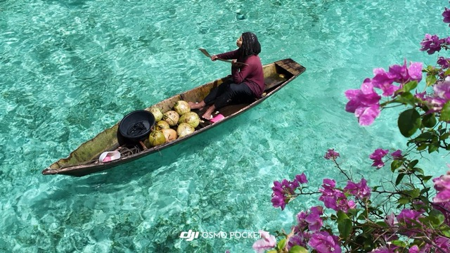
{kind=link}
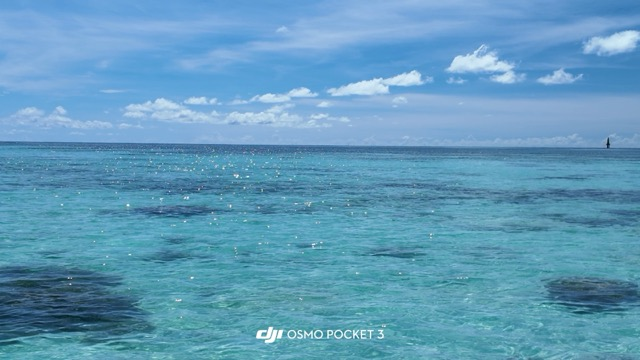
{kind=link}
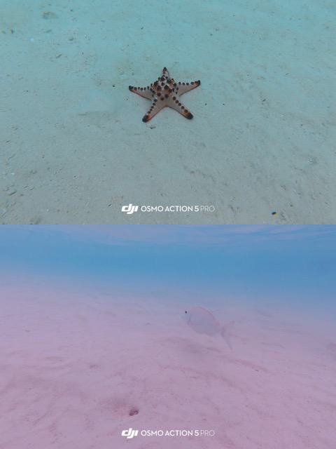
浮潜了好几次，我也有一些个人经验。浮潜的服装可以很简单，有的人穿个短裤就下水了，救生衣都不用。也有人会船水母服，长裤，袜子，这样可以避免晒伤，衣服和身体贴合的比较紧也能减少一些水中的阻力。如果是在一些比较浅的地方，我觉得袜子还是挺有必要的，不然容易踩到珊瑚，弄伤脚。我觉得去浮潜前最好学会游泳，会游泳的人可以去到更远的地方，能看到更多的海下景色，也不会担心被海水推得太远而回不来，乐趣会更多。有的人还带了脚蹼，或许练习过深潜，他们不需要深潜装备也可以下潜一定的距离。
每天的浮潜我基本都下去，但是我不会游泳，蹬脚带来的前进距离很少，还不如划手。但是在水下，划手的阻力还挺大，久了肩膀也很累，有时漂远了会非常担心游不回去。下次还想浮潜的话，一定先学会游泳。
有一次海浪把另一艘船推了过来，我恰好在两艘船中间，想游开又游不开，还好船上有人用脚撑开了另一艘船，我也不知道如果两艘船把我夹住会不会很痛。
还有一次，船上也有个人不会游泳，船长带着她下去了，但是她比较害怕，船长是当地人，说的普通话她也没太听懂，在海里她挣扎了一下，拉着船长，导致船长呛了好几口海水，回到船上歇了很久，才缓了过来，要是再多喝几口，说不定就得急救了。
三天都有浮潜，不会游泳导致有点累，游不远，看到的东西都大差不差，都是一些珊瑚和鱼，所以后面 也觉得有一点点倦了。
仙本那码头附近有很多吃海鲜相关的店，我本身对海鲜不是很感兴趣，主要是怕腥。但来都来了，不吃一下也说不过去。小红书上翻了翻大家的评论，找了一家店，就在码头边上，还能顺便看看远处的落日。
点了皮皮虾、梭子蟹、海胆、炒饭和饮料，海鲜的做法店员会给你推荐。海胆好像是第一次吃，做法是海胆蒸蛋，但除了口感比蒸蛋紧实一点，我吃不太出来海胆的味道。梭子蟹是切半后炒，酱料的味道偏甜口，还行。皮皮虾很大一只，宽有三四厘米，长应该有十几厘米，是这一顿里最贵的海鲜了，对海鲜价格了解不多，也不知道有没有被坑。皮皮虾是椒盐风味的，肉确实不少，也算紧实，吃起来会比较满足。
在仙本那也有找早餐吃，青旅楼下就有一家小红书上推荐的早餐店，叫詹全记，早餐主要是一些面包，和印度煎饼之类的，饮料也是甜咖啡、拉茶、柠檬茶那些，味道不错，每天去码头前都打包一份去吃。
马来西亚有名的还有榴莲，想在仙本那找找，但去了小红书上标记的位置都没有看到，不知道是不是时候没到。亚庇倒是天桥底下有榴莲一条街，但时间关系也没去，最终也没吃成榴莲。
仙本那最后一天，晚上七点多的飞机回亚庇。
从亚庇直飞深圳相对轻松一点，不然从仙本那回深圳，需要在吉隆坡转机，时间比较长。
浮潜回来后，回到青旅，等接送的司机去机场。中途还有些时间，去了小红书上推荐的一家咖啡店，说是少数的能喝到不甜的拿铁的咖啡店，店铺的装修挺好看的，拿铁也确实是正常拿铁，只是说不上多好喝，还点了一份花生酱吐司，味道倒是不错，可能是浮潜回来饿了。
{kind=link}
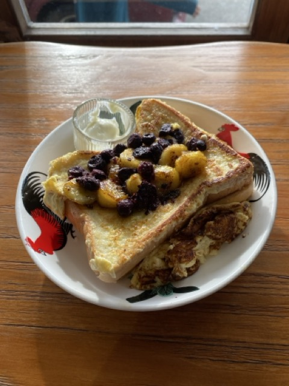
day8 - go home
早上九点多的飞机，回到深圳十二点多，旅程结束了。
这次行程来回的飞机都是亚航，限定每个人只能有 7 kg 的行李额，我们都比较担心会超重，每次都会整理行李，把一些重的衣服穿在身上，但其实都没人检查。
如果让我重新整理行李的话，我会减少一些换洗的衣服，带一套睡衣晚上睡觉舒服一些，再带一套比较轻薄容易干的衣服，还有一些一次性的内裤就够了，这次出行其实很多天我都穿同一条短裤，以后看看能不能把行李精简成只有一个背包，这样出发应该会更轻松一些。
另外去海边玩要做好防晒，因为防晒霜吐的不均匀，这次晒伤了一些，洗热水的时候会有点烫伤的痛，那些晒伤的地方黑了很多，也掉了不少皮，甚至有的地方还长了痣。海边的阳光真的很猛烈，不容小觑。
这是我第一次出国，因为马来西亚免签，所以出国的手续不多，带上护照，填一下 MDAC (Malaysia Digital Arrival Card) 就好了， MDAC 不太清楚什么地方用到，没有主要要求出示。
马来西亚有很多华人，找的地接也是华人，所以整体交流没啥障碍，和其他人交流，大部分人也都会英语，实在不行也能用翻译软件翻译，吃饭买东西，自己的蹩脚英语也够用了。
消费大部分都能用 Alipay，少数的可能只收现金，身上备一点就行。出行用 Grab 打车也很方便，和国内滴滴没啥区别，但是从 Grab 打到的车，我觉得都没有异味，这点比国内的一些出租车好太多了。导航就用 Google map，找吃的可以用 Google map 或者小红书。
拍摄的话，如果下水基本都是大疆的 action，套一个防水的壳。不下水的话，就用 Pocket 和手机。因为总是需要出海，难免会碰到一些水，电子设备都需要找一个防水袋装起来。
整体消费，两个人出行、住宿以及报团，大概人均七八千，当地消费了 2000 多，主要是吃饭和打车的费用。
马来西亚的货币是令吉 (Malaysia Ringgit)，我们去的时候，令吉和人民币的比率是 1:1.75，消费令吉的时候没觉得很多，但换算到人民币就不少了。
大致的花费
统计的是两个人一起的消费。
| 项目 | 花费 |
|---|---|
| 深圳 -> 亚庇机票 | 2490 |
| 亚庇 -> 深圳机票 | 2936 |
| 亚庇 - 仙本那往返机票 | 338 + 276 |
| 亚庇希尔顿酒店 3 晚 | 3196 |
| 仙本那月光客栈 3 晚 | 999 |
| 亚庇机场酒店 1 晚 | 299 |
| 浮潜等活动团费 | 4392 |
| 保险 | 306 |
| 当地货币 500 MR | 875 |
| Apipay：当地吃喝、打车、杂物购买等 | 大约 1200 |
| 合计 | 17307 |
总的来说是一段不错的旅程，整体行程都比较方便，海很好看，也体验了一些不一样的风情，期待下一次的出行！
｡:.ﾟヽ(*´∀`)ﾉﾟ.:｡